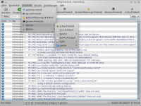
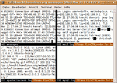

Logdateien
Zum Verständnis dieses Artikels sind folgende Seiten hilfreich:
Protokolldateien oder "Logdateien" (engl. "log files") sind ein wichtiges Konzept eines Linux-Systems. Viele Programme, insbesondere alle Dienste und das System selbst, schreiben derartige Dateien. Dort kann man Fehler des Systems finden, Probleme von Diensten erkennen oder einfach nur verfolgen, was das System im Hintergrund macht.
Üblicherweise findet man die Protokolldateien im Verzeichnis /var/log. Manche Dienste, die z.B. mehrere Dateien schreiben, benutzen Unterverzeichnisse wie z.B. Samba mit /var/log/samba/.
Logdateien sind immer Textdateien, d.h. man kann sie mit jedem beliebigen Texteditor oder Dateibetrachter ansehen. Die Desktop-Umgebungen bringen Werkzeuge mit, um die Protokolle etwas komfortabler zu analysieren. Man kann aber auch das Terminal verwenden.
Hinweis:
Logs¶
Hier sind die Logdateien und ihre Funktion aufgeführt, die auf einem Ubuntu-System bis einschließlich Ubuntu 14.04 Trusty vorhanden und relevant für den Benutzer sind. Natürlich gibt es in /var/log deutlich mehr Dateien, wenn Dienste nachinstalliert wurden.
| Logdatei | Bescheibung |
| acpid | Ausgaben der Energieverwaltung. |
| auth.log | Alle Versuche, sich am System anzumelden, werden hier protokolliert. Dabei ist egal, ob sich jemand an einer Konsole oder über ssh anmeldet oder versucht wird, per sudo Root-Rechte zu erlangen. |
| cups | Protokoll der Common Unix Printing Services. Druckerprobleme? Hier gibt es mehr zu sehen, insbesondere wenn man in der /etc/cups/cupsd.conf die Option "LogLevel debug" setzt. |
| daemon.log | Viele Dienste schreiben hier ihre Meldungen hinein, z.B. "mountd" oder "squid". Muss ab 11.04 von Hand aktiviert werden. |
| dmesg | Letzte Meldungen des Kernels. Die Informationen stammen aus einem Ringpuffer, d.h., dass alte Meldungen überschrieben werden (siehe auch dmesg). Die Datei kern.log enthält dagegen auch ältere Meldungen. |
| dpkg sowie history.log in apt | Protokoll der Paketverwaltung. Hier findet man, wann welches Programm installiert, gelöscht oder aktualisiert wurde. |
| kern.log | Meldungen des Kernels, z.B. Meldungen, die aus iptables-Regeln heraus entstehen. |
| mail* | Hat man einen Mailserver im System installiert, so werden hier die Protokolle geschrieben. |
| mysql | Protokoll des MySQL Datenbankservers. |
| postgresql | Verzeichnis der Protokolle der Datenbank Postgresql. |
| pppstatus | Verzeichnis mit monatlichen Protokollen des pppstatus zur Protokollierung von Internetverbindungen. |
| samba | Die Protokolle des Samba Servers. |
| syslog | Die Ausgabe des syslogd. Eine Alternative zu Syslog ist das um einige Funktionen erweiterte syslog-ng |
| user.log | Ausgabe von Prozessen, die von Benutzern gestartet wurden. Muss ab 11.04 von Hand aktiviert werden. |
| Xorg.0.log | Ausgabe des XServers. |
| ~/.xsession-errors | Ausgaben zahlreicher grafischer Programme in einer versteckten Datei im Homeverzeichnis jedes Benutzers. |
KDE¶
 KDE bringt ein Werkzeug zum Betrachten der Logdateien mit, das Programm:
ksystemlog
 mit apturl
mit apturl
Paketliste zum Kopieren:
sudo apt-get install ksystemlog
sudo aptitude install ksystemlog
Das Programm ist Teil des KDE Metapakets kdeadmin. Man findet es unter "K-Menü -> System -> Systemprotokoll-Betrachter (KSystemLog)". Unter "Protokolldateien" kann das zu betrachtende Protokoll ausgewählt und über die Filterzeile nach bestimmten Begriffen gesucht werden. Im Gegensatz zum Systemprotokollbetrachter von GNOME zeigt KSystemLog nur vorgegebene Protokolle an. Möchte man weitere Logdateien auswählen können, so muss man diese von Hand über "Einstellungen -> KSystemLog einrichten" hinzufügen. Am besten fügt man die Protokolle von selbst installierten Diensten zu den "Dienste-Protokollen" hinzu.
Terminal¶
Hat man einen Server ohne graphische Oberfläche installiert, so hat man natürlich keine graphischen Werkzeuge zur Verfügung. Protokolle lassen sich dennoch sehr komfortabel in einer Konsole betrachten.
less¶
less ist ein Textbetrachter für das Terminal. less kann jede Textdatei ausgeben. Mit den Tasten ↑ bzw. ↓ kann man im Protokoll hoch und runter scrollen oder mit Bild ↑ bzw. Bild ↓ gleich seitenweise hoch oder runter springen.
Allgemeiner Aufruf:
less <logdatei>
Beispiel:
less /var/log/syslog
Möchte man im Protokoll vorwärts suchen, so kann man mit der Eingabe von
/Suchbegriff
also ⇧ + 7 und danach das Suchwort, nach einem Begriff suchen. Möchte man zum nächsten Treffer der Suche springen, drückt man die Taste N , zum vorangehenden Treffer gelangt man mit ⇧ + N . Möchte man im Protokoll rückwärts suchen, so kann man mit der Eingabe
?Suchbegriff
also ⇧ + ß und danach das Suchwort, nach einem Begriff suchen. Möchte man zum nächsten Treffer der Suche springen, drückt man wieder N . Wenn man die Logdatei "verfolgen" möchte, so kann mit ⇧ + F die Anzeige der Logdatei ständig aktualisieren lassen, so dass Zeilen, die hinzukommen, automatisch angezeigt werden.
zless¶
zless ist eine Kombination aus less und gzip. So lassen sich auch komprimierte Dateien unmittelbar lesen. Unter Ubuntu kann auch less automatisch mit gzip komprimierte Dateien öffnen.
Allgemeiner Aufruf:
zless <logdatei.gz>
Beispiel:
zless /var/log/syslog.1.gz
tail¶
tail ist ebenfalls ein Programm, um Textdateien in einem Terminal anzuzeigen. Es ist jedoch darauf ausgelegt, die letzten Zeilen einer Datei auszugeben. Es ist also ideal, um die aktuellsten Informationen aus einem Protokoll auszugeben.
Allgemeiner Aufruf:
tail <logfile>
Beispiel:
tail /var/log/syslog
Richtig interessant wird tail erst, wenn es darum geht, Änderungen an einer Logdatei zu verfolgen. Mit den Optionen -f (um Änderungen auszugeben) und -n 0 (dies legt die Anzahl der letzten Zeilen, die beim Aufruf von tail ausgegeben werden auf Null fest) werden nur die Zeilen ausgegeben, die nach dem Aufruf des Befehls zum Protokoll hinzugefügt werden.
Man kann dies gut beobachten. Gibt man z.B. in einem Terminal den Befehl
tail -f -n 0 /var/log/syslog
ein und steckt anschließend z.B. einen USB-Speicherstick am Rechner an:
Oct 15 00:15:41 isleofskye kernel: [17214570.744000] usb 4-5: new high speed USB device using ehci_hcd and address 4 Oct 15 00:15:41 isleofskye kernel: [17214570.876000] usb 4-5: configuration #1 chosen from 1 choice Oct 15 00:15:41 isleofskye kernel: [17214570.876000] scsi4 : SCSI emulation for USB Mass Storage devices Oct 15 00:15:41 isleofskye kernel: [17214570.880000] usb-storage: device found at 4 Oct 15 00:15:41 isleofskye kernel: [17214570.880000] usb-storage: waiting for device to settle before scanning Oct 15 00:15:46 isleofskye kernel: [17214575.880000] usb-storage: device scan complete Oct 15 00:15:46 isleofskye kernel: [17214575.880000] Vendor: USB007 Model: mini-USB2TX Rev: 100 Oct 15 00:15:46 isleofskye kernel: [17214575.880000] Type: Direct-Access ...
MultiTail¶
 MultiTail  ermöglicht es, gleichzeitig in einem Terminalfenster mehrere Logdateien im Auge haben. Das Programm lässt sich direkt aus den Paketquellen über das Paket
ermöglicht es, gleichzeitig in einem Terminalfenster mehrere Logdateien im Auge haben. Das Programm lässt sich direkt aus den Paketquellen über das Paket
multitail (universe [2])
mit apturl
Paketliste zum Kopieren:
sudo apt-get install multitail
sudo aptitude install multitail
installieren [1]. Mit dem Programm kann man mehrere Logdateien in beliebigen Zeilen oder Spalten in einem Terminalfenster anzeigen. So behält man auch bei mehreren Protokollen die Übersicht.
Drei Logdateien untereinander in einer Spalte darstellen:
multitail <logdatei1> <logdatei2> <logdatei3>
Zwei Logdateien nebeneinander in zwei Spalten:
multitail -s 2 <logdatei1> <logdatei2>
ccze¶
Zur besseren Übersichtlichkeit kann man sich Protokolle mit dem Befehl ccze aus dem Paket
ccze (universe)
mit apturl
Paketliste zum Kopieren:
sudo apt-get install ccze
sudo aptitude install ccze
auch farbig oder sogar HTML-formatiert anschauen.
tail -f -n 0 /var/log/syslog | ccze
lnav¶
Als Alternative zu ccze kann auch The Log File Navigator Protokolle farbig anzeigen. Das Programm kann mehrere Dateien aus einem Verzeichnis laden, aktualisiert die Anzeige bei Änderungen, die programminterne Suche unterstützt Autovervollständigung sowie reguläre Ausdrücke, und anhand der Schematik einer Logdateien können Meldungen gefiltert werden. Das Programm kann aus den offiziellen Paketquellen über das folgende Paket installiert[1] werden :
lnav (universe, ab Ubuntu 14.04)
mit apturl
Paketliste zum Kopieren:
sudo apt-get install lnav
sudo aptitude install lnav
Beispiele:
Logdatei(en) auslesen:
lnav LOGDATEI [LOGDATEI2 LOGDATEI3...]
Alle Logdateien im Verzeichnis auslesen:
lnav /PFAD/ZUM/LOGVERZECIHNIS
/var/log/syslog auslesen:
lnav -s
Fehlermeldungen beim Kompilieren mit Zeitstempel protokollieren:
make 2>&1 | lnav -t
grep¶
grep ist ein Werkzeug, um aus einer Textausgabe bestimmte Zeilen oder Ausdrücke herauszufiltern. Das Programm kann man mit einer Pipe auch mit der Ausgabe eines anderen Programms kombinieren und auch mit regulären Ausdrücken kompliziertere Suchen ausführen.
Als Beispiel werden zwei Anwendungen aufgeführt. Dies verdeutlicht, dass man mit grep sehr einfach lange Logdateien nach den wichtigen Ausgaben filtern kann.
Beispiel 1¶
tail -f - n 0 /var/log/syslog | grep pwc
Oct 14 14:32:51 isleofskye kernel: [17179594.204000] pwc Philips webcam module version 9.0.2-unofficial loaded. Oct 14 14:32:51 isleofskye kernel: [17179594.204000] pwc Supports Philips PCA645/646, PCVC675/680/690, PCVC720[40]/730/740/750 & PCVC830/840. ...
Beispiel 2¶
less /var/log/syslog | grep -E '(HIGHMEM|LOWMEM)'
Oct 13 13:14:22 isleofskye kernel: [17179569.184000] 127MB HIGHMEM available. Oct 13 13:14:22 isleofskye kernel: [17179569.184000] 896MB LOWMEM available. Oct 14 12:53:32 isleofskye kernel: [17179569.184000] 127MB HIGHMEM available. Oct 14 12:53:32 isleofskye kernel: [17179569.184000] 896MB LOWMEM available. ...
Logrotate¶
Damit Logdateien nicht unbeschränkt wachsen und irgendwann die Festplatte belegen, wird bei der Installation eines Linux Systems meistens auch der Dienst "logrotate" installiert. Dies ist auch bei Ubuntu der Fall bzw. kann über das gleichnamige Paket nachgeholt werden.
Logrotate wurde entwickelt, um die Verwaltung von Logdateien zu vereinfachen. Die Dateien können automatisch komprimiert, gelöscht oder per Mail verschickt werden. Logrotate kann dies täglich, wöchentlich, monatlich durchführen oder wenn eine Logdatei eine vorgegebene Größe überschreitet. Üblicherweise wird Logrotate einmal am Tag aktiv.
Am Beispiel des "Syslogs" kann man sehen, wie logrotate arbeitet. Schaut man sich die Dateien in /var/log an, die den Namen "syslog" tragen:
ls -al /var/log/syslog*
so sieht man acht Dateien. Die aktuelle "syslog", die unkomprimierte "syslog.0" vom Vortag und die "syslog"-Dateien der sechs Tage davor, die in der Zwischenzeit komprimiert wurden. Am achten Tag werden dann die Logdateien gelöscht.
-rw-r----- 1 root adm 82484 2006-10-15 00:29 syslog -rw-r----- 1 root adm 163497 2006-10-14 13:06 syslog.0 -rw-r----- 1 root adm 23503 2006-10-13 01:30 syslog.1.gz -rw-r----- 1 root adm 36587 2006-10-12 11:18 syslog.2.gz -rw-r----- 1 root adm 38361 2006-10-11 02:47 syslog.3.gz -rw-r----- 1 root adm 97953 2006-10-10 17:53 syslog.4.gz -rw-r----- 1 root adm 46201 2006-10-09 11:05 syslog.5.gz -rw-r----- 1 root adm 35665 2006-10-06 17:21 syslog.6.gz
Hinweis:
Gesteuert wird Logrotate über Dateien in /etc/logrotate.d. Als Beispiel wird hier das Rotieren des Logs des Anonymisier-Dienstes Tor erklärt.
/var/log/tor/*log {
daily # täglich
rotate 5 # Behalte die letzten fünf Tage
compress # Komprimiere die alten Logdateien
delaycompress # Komprimiere die Daten, nachdem sie verschoben worden sind
missingok # Falls eine Logdatei nicht existiert, ignoriere es
notifempty # Leere Logdateien werden nicht rotiert
sharedscripts # Siehe Man-Page
postrotate # Führe nach dem Rotieren das folgende Skript aus
/etc/init.d/tor reload > /dev/null
endscript
}
Weiterführende Erklärungen findet man in der deutschen Man-Page zu Logrotate  .
.
Log-Konsole¶
Es ist möglich, den Inhalt der Datei syslog auf einer virtuellen Konsole auszugeben. Dann kann man jederzeit einen Blick hineinwerfen, ohne umständlich die Datei öffnen zu müssen. Es gibt mehrere Möglichkeiten, eine Log-Konsole einzurichten. Man kann den syslog-Daemon so konfigurieren, dass er Meldungen direkt in eine virtuelle Konsole schreibt, oder man kann einen Pager (z.B. less) auf einer Konsole laufen lassen. Letzteres hat den Vorteil, dass man scrollen und suchen kann.
Eine dritte Variante verwendet das Paket
console-log (universe)
mit apturl
Paketliste zum Kopieren:
sudo apt-get install console-log
sudo aptitude install console-log
das automatisch eine Log-Konsole einrichtet. Standardmäßig werden das Postfix-Log auf Konsole 8 und das syslog auf Konsole 9 ausgegeben. Diese Einstellungen lassen sich in der Datei /etc/console-log.conf anpassen.
Hinweis:
Anscheinend funktioniert console-log unter Ubuntu 15.04 derzeit nicht (1453997).
Problembehebung¶
Rsyslog-Dämon - Erstellen von Logdateien anpassen¶
Für das Erstellen der Logdateien ist der Dienst rsyslogd zuständig. Dieser wurde automatisch über das Paket rsyslog installiert. Über ihn kann man Probleme mit Logdateien selbst beheben oder gezielt steuern, was wann wo wie protokolliert werden soll. Seine wichtigsten System-Dateien sind:
/etc/default/rsyslog
/etc/init.d/rsyslog - Symlink zum Upstart-Initskript (siehe nächster Punkt)
/etc/init/rsyslog.conf
/etc/rsyslog.conf
/etc/rsyslog.d/50-default.conf - die zentrale Konfigurationsdatei
/usr/sbin/rsyslogd - die Programmdatei
Den Rsyslog-Dämon temporär in den Debug-Modus versetzen¶
Manchmal – vor allem aber dann, wenn man einer eventuellen Fehlfunktion des Systems oder aber seiner Bestandteile auf die Spur kommen will – möchte man den Dienst rsyslogd zeitweilig etwas empfindlicher stellen. Dafür muss man zuerst den rsyslogd stoppen:
sudo service rsyslog stop
Dann startet man den rsyslogd manuell im Debug-Modus:
sudo /usr/sbin/rsyslogd -dn
In Folge dessen wird der Protokollant allerlei Debugmeldungen auf dem Terminal produzieren. Hat man dann endlich genug von dem ganzen Zinnober, so unterbreche man selbiges mit Strg + C und starte danach schließlich wieder den Rsyslog-Dämon:
sudo service rsyslog start
- Erstellt mit Inyoka
-
 2004 – 2017 ubuntuusers.de • Einige Rechte vorbehalten
2004 – 2017 ubuntuusers.de • Einige Rechte vorbehalten
Lizenz • Kontakt • Datenschutz • Impressum • Serverstatus -
Serverhousing gespendet von